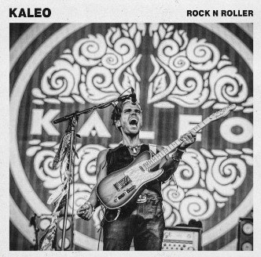

Kaleo
Kaleo (stylized as KALEO) is an Icelandic blues rock band which formed in Mosfellsbær in 2012. It consists of lead vocalist and guitarist Jökull Júlíusson, drummer Davíð Antonsson, bassist Daniel Kristjánsson, lead guitarist Rubin Pollock and harmonicist Þorleifur Gaukur Davíðsson. They have released three studio albums, Kaleo (2013), A/B (2016), and Surface Sounds (2021),as well as the EP Glasshouse (2013).
A/B has sold over one million albums worldwide. Its second single, "Way Down We Go", was certified double platinum in the US and reached number one on the Billboard Alternative Songs chart on 20 August 2016. Kaleo received a Grammy Award nomination in 2017 for Best Rock Performance for the song "No Good".
Members
- Jökull Júlíusson (short: JJ) / lead vocals, rhythm guitar, piano
- Rubin Pollock / lead guitar
- Daníel Ægir Kristjánsson / bass, keyboard
- Davíð Antonsson / drums, percussion, backing vocals
- Þorleifur Gaukur Davíðsson / harmonica, bongos, keyboard